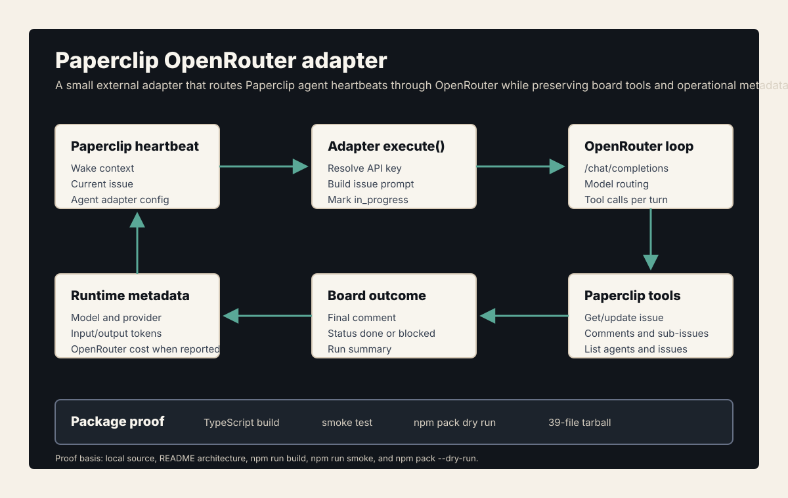
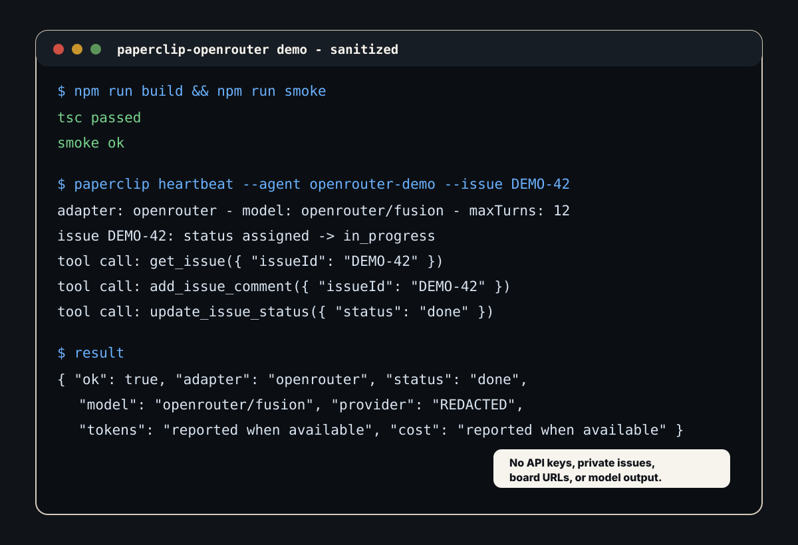
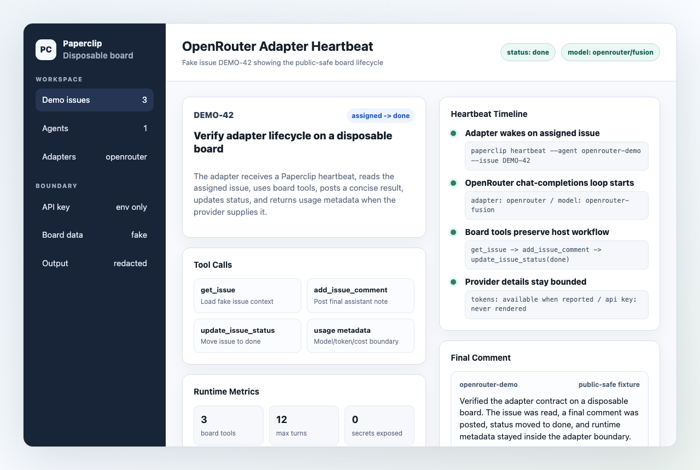

Problem
Agent platforms need more model routing choices without breaking their own workflow model. The hard part is not calling a model API; it is preserving the host application's issue lifecycle, tool contract, comments, status updates, and runtime accounting.
What I Built
Paperclip OpenRouter Adapter registers a new Paperclip adapter type, resolves OpenRouter configuration, turns a Paperclip heartbeat into an issue-aware prompt, runs a chat-completions tool loop, exposes Paperclip board tools to the model, and writes the result back as issue comments and status changes.
- Adapter boundaryExternal Paperclip adapter registration, server entrypoint, and UI parser export.
- Model routingOpenRouter model catalog support with defaults, model profiles, token limits, transforms, and route configuration.
- Tool loopIssue reads, status updates, comments, sub-issues, agent listing, and usage/cost metadata.



Technical Decisions
- Keep the adapter scoped to Paperclip board tools rather than pretending it can edit local files.
- Support any OpenRouter model id while providing sane defaults and a cheap profile.
- Return model, provider, token, cost, generation, and turn metadata when OpenRouter reports it.
- Package the adapter through normal npm exports so the UI parser and server entrypoint can load cleanly.
What This Proves
This is clean developer-tooling proof: adapter contracts, model-provider integration, tool-loop execution, typed API boundaries, and package discipline in a small public repo.
Public Evidence
- README upgraded and pushed.
npm run buildpassed.npm run smokepassed, including API error-contract tests.npm pack --dry-runproduced a 42-file package preview.- Example agent config fixture — available on request.
- Sanitized demo-board transcript figure included.
- Disposable board screenshot captured with fake issue data.
- Proof transcript — available on request.